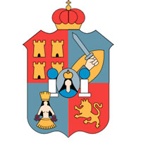

La ubicación de Tabasco en la zona tropical, su escasa elevación con respecto al nivel del mar y su cercanía con el golfo de México a lo largo de 191 km de costa, determinan el desarrollo de climas cálidos con influencia marítima. El clima tropical húmedo es una característica muy singular de la región, con temperaturas que van de los 15 °C en los meses más fríos (enero y diciembre) hasta 44 °C en los más calurosos; la temperatura promedio es de 26 °C, la cual en razón de la escasa altura con relación al nivel del mar permanece constante. El inventario de fauna silvestre existente en Tabasco está formado por un total de 2.042 especies, de las cuales 1.222 son especies de invertebrados y 820 especies de vertebrados, estos últimos, están conformados por 500 especies de aves, 113 de mamíferos, 98 de peces, 85 de reptiles y 24 de anfibios. En la entidad está representada el 47% de las especies de aves que habitan en México, el 42% de los mamíferos voladores del País, El estado de Tabasco cuenta con diversos atractivos naturales, arqueológicos, playas, turismo ecológico y de aventura, centros recreativos, museos y atractivos culturales. así como el 23% por ciento de las especies de vertebrados existentes en el territorio nacional. Del total de especies, 241 se encuentran catalogadas como amenazadas, en peligro de extinción o sujetas a protección especial. Tabasco cuenta con una gran variedad de manifestaciones culturales de interés y su producción artística ha recibido reciente atención por parte de las instancias gubernamentales. En el Centro Histórico de Villahermosa, encontramos uno de los edificios más representativos ya que alberga cientos de recuerdos de muchos Tabasqueños y de su historia misma. Lo que alguna vez fue el Palacio Municipal y una de las bibliotecas más recordadas se ha convertido en el Centro Cultural Villahermosa donde podemos encontrar diversas exposiciones plásticas y fotográficas, talleres, servicios educativos, conferencias e infinidad de eventos que contrastan en definitiva con la arquitectura extraordinaria y en renovación de este edificio único en su tipo en la región sureste de México. La cocina regional tabasqueña es variada y extensa gracias a las antiguas recetas mayas y chontales, a la gran cantidad de vegetales, frutas y animales existentes en la entidad, así como a las plantas o hierbas (achiote, chaya, muste, perejil, epazote, cilantro, chipilín, chile amashito, hoja de plátano o de tó) que le dan delicioso y singular olor, color y sabor a los guisos típicos de la región. Se caracteriza por la utilización de ingredientes y especies propios del estado y que son difíciles de encontrar en las mesas de otros estados del país, incluso en las regiones colindantes. En el acervo culinario tabasqueño destacan recetas como las de tortuga en sangre, tortuga en verde, iguana al chirmol, pejelagarto asado, tamales de chipilín y la bebida popular más conocida: el pozol, hecho a base de masa de maíz y cacao; el cual es, a pesar de ser una bebida, la base de la alimentación de los tabasqueños. Pozol con cacao, chorote, pozol blanco, o sea sin cacao, se puede beber fresco (recién molido) o agrio (dejar la mezcla de cacao y masa unos 8 días para que se fermente), esta bebida es la que caracteriza a los tabasqueños. Al emblemático pejelagarto se le unen otras especies locales, como la hicotea y el pochitoque, ambas tortugas; el armadillo y la iguana; cada uno de los cuales sirve para preparar un platillo típico. Sin embargo en la actualidad la caza, pesca, venta y consumo de especies como la hicotea, pochitoque, iguana y armadillo, está prohibida por la ley ya que se encuentran en la lista de especies en peligro de extinción. Del mismo modo, se añaden al maíz, frijol y cacao, omnipresentes en la gastronomía mexicana, ingredientes como el chipilín (una hoja que se utiliza en la preparación de tamales), el achiote (una pasta roja que sirve como colorante) y una gran variedad de chiles entre los que destaca el tradicional chile amashito, y frutas en general. Los platillos de las zonas costeras presentan también gran variedad de pescados y mariscos, como el róbalo, el huachinango, la mojarra, la jaiba, el ostión y el camarón.
